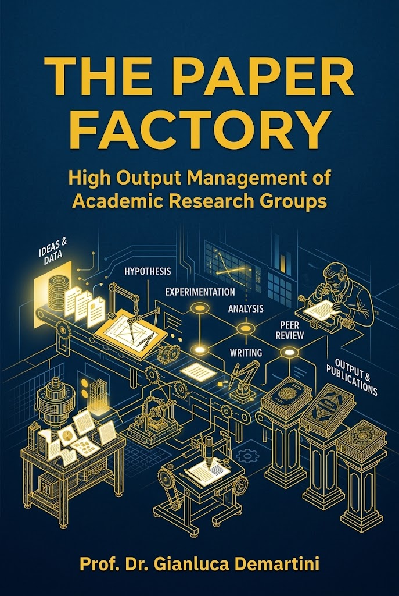

Strategic guidance for early-career academics. Learn how to effectively manage your research group, secure funding, and build a compelling case for tenure and promotion.
Schedule a Free 30 Minutes CallThe transition from an individual, independent researcher to a principal investigator is one of the most challenging leaps in academia. Leading a small group of PhD students while simultaneously pushing for tenure and promotion requires a strategic balance of mentorship, grant acquisition, and high-impact publishing.
I am Gianluca Demartini, a Professor in Data Science at the University of Queensland (UQ) ranked 40 in the world by QS and a Dieter Schwarz Fellow at the Technical University of Munich (TUM) ranked 25 in the world by QS. My research spans areas in Responsible AI. Over the course of my career, I have published extensively in top-tier computer science venues, served in senior academic roles for different universities in UK and Australia and for journal editorial boards, and built a track record of securing competitive national and international funding. I have extensive interdisciplinary research experience, so I am able to advise on research careers beyond computer science and engineering.
I understand the unique pressures of the tenure track and the practical realities of scaling research output. My approach is designed to provide you with the actionable frameworks I use to mentor scholars, streamline research lab operations, and build a sustainable, successful academic career without sacrificing scientific rigor (and your life!).

A practical, process-oriented guide for early-career academics. Learn how to hire the right PhD candidates, foster a healthy and highly productive lab culture, manage research budgets, and ensure consistent, high-impact publication output without burning out.
This framework is optimized for postdocs transitioning to faculty, assistant professors, and early-stage PIs who are within 1 to 5 years of submitting their tenure/promotion dossier.
High research output relies on consistent feedback loops. You should aim for weekly or bi-weekly 1-on-1 meetings to address roadblocks, supplemented by a weekly all-hands lab meeting where students present to one another. This fosters peer-learning and collaboration and reduces their sole dependency on you for technical troubleshooting.
Recruiting research students is the most important management decision you will make. Build a pipeline by leveraging top undergraduate or master’s students in your own courses for short-term research projects. This is much easier and less time consuming than assessing international applicants' research skills. When recruiting externally, look beyond grades: prioritize curiosity, resilience, and strong communication. Giving a prospective student a small, paid trial task before committing to a 3-4 year journey can mitigate major risks.
Treat funding like a rolling pipeline, not a one-off sprint. You should be planning 12 to 18 months in advance with a vision for the next 5 years. Align your lab's strategic direction with the priorities of major funding bodies (e.g., NSF, DFG, UKRI, ARC, or Horizon Europe), and spend the year gathering pilot data and building consortium relationships so the actual writing process is backed by momentum and proof of concept.
Stop attending conferences just to sit in the audience and listen to papers you can read online. As a PI, conferences are your highest-leverage networking events. Use them to pre-schedule 1-on-1 coffees with potential research collaborators, future research students, and prospective letter-writers for your tenure/promotion dossier. It is also your primary hunting ground for recruiting exceptional postdocs.
Disclosure: By submitting a question below, you consent that your question and its answer may be published anonymously on this website or in related materials to help other early-career academics.
Let's discuss your current challenges you are facing and map out a strategy for your group and your tenure/promotion application. Initial 30 minutes calls are complimentary. This service is best suited for late-stage post-docs applying for tenure-track positions and for tenure-track academics (e.g., assistant professors, lecturers).